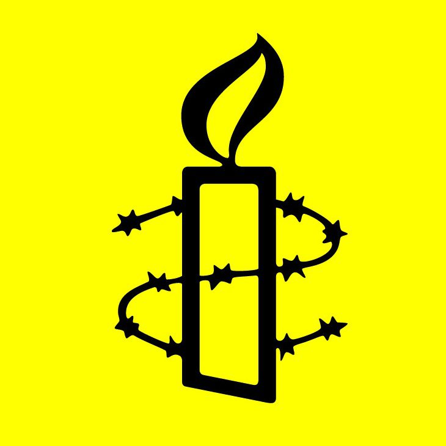
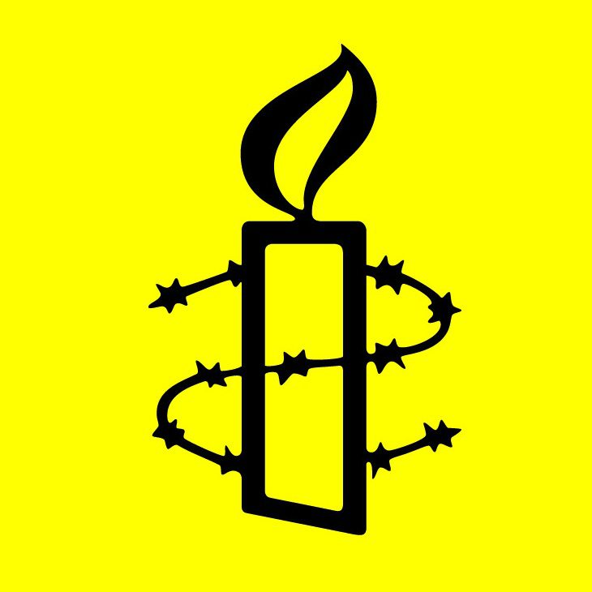

新调查揭露了国际企业涉嫌资助缅甸军方，包括许多对违反国际法罪行及其他侵犯人权行为负有直接责任的军事单位。
国际特赦组织对外泄的官方文件进行分析后，揭发缅甸军方从缅甸经济控股有限公司（Myanma Economic Holding Company Limited，简称MEHL）持有的股份中获得巨额收益。缅甸经济控股有限公司是一个秘密的企业集团，其业务涉足采矿、啤酒、烟草、服装制造和银行业。缅甸经济控股有限公司与多家国内外企业都有合作关系，如日本跨国啤酒公司麒麟（Kirin）和韩国钢铁巨头浦项钢铁（POSCO），中国金属矿业公司万宝矿产。
根据缅甸经济控股有限公司的股东记录，包括作战师在内的军事单位持有该公司约三分之一的股份；这些记录还详细列出了缅甸经济控股有限公司和西指挥部（Western Command）之间的联系。西指挥部负责监督若开邦的行动，当中涉及对罗兴亚人和其他少数民族所犯的暴行。该报告还提供了信息，显示自1990年缅甸经济控股有限公司成立以来，股东每年都会收到可观的股息。
国际特赦组织商业、安全与人权主任马克·杜梅特（Mark Dummett）表示：“这些文件为缅甸军方如何从缅甸经济控股有限公司庞大的商业帝国中获利提供了新的证据，并清楚表明军方与缅甸经济控股有限公司之间有着密不可分的关系。情况并非缅甸经济控股有限公司在无意中资助了侵犯人权的行为，而是其整个董事会都由高级军事官员组成。”
缅甸经济控股有限公司并非无意中资助了侵犯人权的行为，而是其整个董事会都由高级军事官员组成
国际特赦组织商业、安全与人权主任马克·杜梅特
“缅甸近代史上一些最严重侵犯人权行为的肇事者，就是从缅甸经济控股有限公司的商业活动中获益的人，例如军方总司令敏昂莱（Min Aung Hlaing），他在2011年持有5千股缅甸经济控股有限公司的股份。由于证据确凿，因此目前与缅甸经济控股有限公司合作的企业必须负责任地终止这些关系。”

全球商业联系
国际特赦组织的研究显示，缅甸经济控股有限公司的商业伙伴与侵犯人权行为之间存在直接关联。缅甸经济控股有限公司与这些商业伙伴合作，在缅甸建立合资企业或签订利润分享协议，当这些业务取得利润时，就分发给作为股东的缅甸经济控股有限公司，然后，缅甸经济控股有限公司再向自己的股东支付股息。
国际特赦组织致函给8家在缅甸与缅甸经济控股有限公司联合经营的企业，包括：
- 缅甸物流公司永流河集团（Ever Flow River Group Public Co., Ltd.，简称EFR）
- 拥有玉石和红宝石开采业务的缅甸企业甘宝扎集团（Kanbawza Group，简称KBZ）
- 日本饮料公司麒麟控股
- 韩国房地产开发商INNO集团
- 韩国服装制造商兼出口商泛太平洋（Pan-Pacific）
- 韩国钢铁制造商浦项钢铁
- 在缅甸有烟草业务的新加坡基金RMH Singapore
- 中国金属矿业公司万宝矿产。
泛太平洋公司在回复中称，鉴于国际特赦组织的调查结果和联合国2019年实况调查团发布的报告，它将终止与缅甸经济控股有限公司的商业伙伴关系。甘宝扎和麒麟表示，正在检视与缅甸经济控股有限公司的关系，而其他公司则没有做出此等承诺，或根本没有任何回应。有关公司回复的完整副本，见报告附录1。
上述公司都是缅甸经济控股有限公司在缅甸境内经营的合作伙伴，不过，其中部分也有国际业务。麒麟是世界上最大的啤酒酿造商之一，旗下的饮料品牌麒麟、生力（San Miguel）、狮王（Lion）和肥轮胎（Fat Tire）等在世界各地的酒吧和商店都有销售。浦项钢铁是全球最大的钢铁制造商之一，为汽车、建筑和造船业生产一系列钢铁产品。万宝矿业则是中国最大的国有企业之一，中国北方工业有限公司的子公司。
揭示秘密关系
缅甸经济控股有限公司由缅甸军政府于1990年创立，目前仍由现役和退役人员管理及所有。两者之间的联系显然为军方在官方预算之外提供了可观收入，但这种关系的性质极其神秘。
国际特赦组织检视了两份文件，里面披露了缅甸经济控股有限公司如何为军方提供资金的新细节。第一份是缅甸经济控股有限公司于2020年1月向缅甸投资暨公司管理局（Directorate of Investment and Company Administration，简称DICA）提交的文件，其中指出，缅甸经济控股有限公司由381,636名个人股东和1,803个“机构”股东共同拥有，前者包括在职和退休军事人员，后者则是“地区指挥部、师、营、部队、老兵协会”。
第二份文件为2010-11年度缅甸经济控股有限公司的股东报告，是该公司的机密文件。此报告除了提供有关缅甸经济控股有限公司股东身份的信息外，还记录了股东在1990年至2011年间每年收到的可观股息。
这份股东报告是缅甸正义组织（Justice for Myanmar）与国际特赦组织分享的文件，该组织是一个活动人士团体，致力于为缅甸人民争取正义和问责。缅甸正义组织在其网站[1]上公布了报告的内容，但交通和通信部（Ministry of Transport and Communications）于9月1日在缅甸封杀了该网站。该部的发言人表示，网站散布“假消息”，而缅甸正义组织则回应指缅甸当局这样做的目的是压制批评声音。
在这20年期间，所有股东获得的股息总额超过1,070亿缅元（107,869,519,830）。根据官方汇率，这大约相当于180亿美元。在这笔款项中，缅甸经济控股有限公司转移了950亿缅元（相当于约160亿美元）给军事单位。
成立20年间，该公司股息总额超过1070亿缅元，据官方汇率约为180亿美元。其中950亿缅元（约160亿美元）被转移至军事单位
两份文件均证实，缅甸经济控股有限公司的股东包括军事单位和高级军官，以上两者直接涉及违反国际法的罪行和其他严重侵犯人权的行为。
在2010-11年度的报告中，95个不同的军事单位被列为该公司的股东，这些单位隶属于西指挥部，即负责监督若开邦军事行动的地区司令部。2010-11年，他们共持有430万股股票，收到逾12.5亿缅元（2.08亿美元）的股息。在缅甸投资暨公司管理局2020年的文件中，西指挥部亦被列为缅甸经济控股有限公司的股东。
第33和第99轻步兵师各营的总部也被列为股东。国际特赦组织记录了这些师对罗兴亚人犯下的反人类罪，包括在若开邦残杀男女老幼，以及在克钦邦和掸邦北部犯下战争罪。
在缅甸投资暨公司管理局的报告中，一些高级军事将领亦被列为股东，当中包括指挥军队犯下违反国际法罪行的人员。其中，总司令兼战争办公室负责人敏昂莱大将被列为第9252号股东。2010-11年，他持有5千股股票，并获得150万缅元（25万美元）的股息。敏昂莱负责监督2017年针对罗兴亚人的残酷行动，联合国呼吁对他展开有关种族灭绝、反人类罪和战争罪的调查和起诉。
马克·杜梅特表示：“尽管外界无从知晓各个军事单位如何使用这些股息，但有关款项的数额和支付频率表明其用作军队的运营支出。”
缅甸正义组织的发言人亚达纳尔·貌（Yadanar Maung）指出：“缅甸经济控股有限公司在向军事部队提供资金的同时，也增加了其资源，并为其包括系统性侵犯人权行为在内的行动提供了资金。任何与缅甸经济控股有限公司有业务往来的企业都有可能助长这些侵权行为，所以必须采取紧急措施切断这些联系。”
缅甸经济控股有限公司的金主负责监督董事会，而且也是那些为反人类罪及其他侵犯人权行为负责的官员，因此，我们无法相信缅甸经济控股有限公司会自己进行改革。更重要的是，缅甸经济控股有限公司并无意愿在与商业伙伴合作时保持公开透明度，以证明其能够进行结构性改革。
马克·杜梅特说道：“缅甸经济控股有限公司的商业合作伙伴有责任尊重人权，设法预防或缓解与其业务活动有关的负面人权影响。鉴于缅甸经济控股有限公司并无进行结构性改革的意愿，其商业合作伙伴必须评估它们与缅甸经济控股有限公司的关系，并负责任地终止合作关系。这意味着，其商业合作伙伴在终止合作时，应考虑各方对社会、经济及人权方面的潜在负面影响所进行的可靠评估，并采取措施缓解这些影响。”
国际特赦组织呼吁缅甸政府进行干预，打破军队和经济之间的联系，当中包括对缅甸经济控股有限公司的所有制和管理进行彻底的改革。政府还应利用缅甸经济控股有限公司所得的利润设立基金，赔偿给那些被该公司提供资金的军事单位或是该公司股东的军事单位侵犯人权的受害者。
[1] 缅甸正义组织为缅甸国内的用户建立了一个镜像站，请点击以下链接访问网站：https://justiceformyanmar.github.io/。